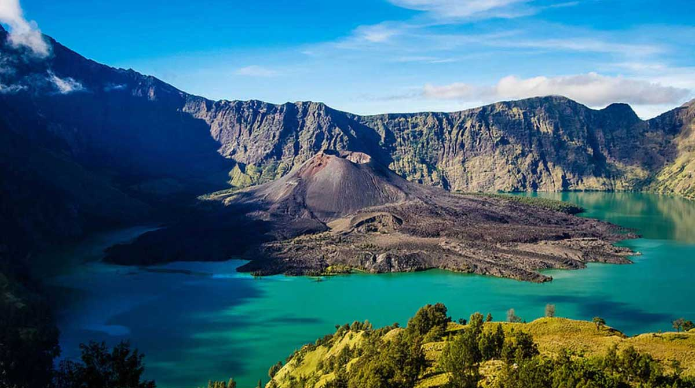
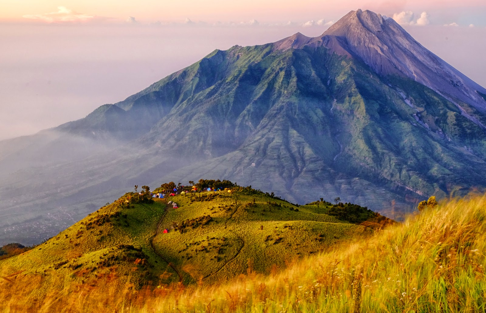

Berwisata merupakan salah satu kegiatan yang dilakukan manusia saat sedang ingin beristirahat dari hari-hari yang sangat sibuk.
Sebagian orang beranggapan bahwa berwisata hanya pemborosan dan tidak memiliki manfaat.
Padahal berwisata juga memiliki manfaat seperti :
Menimbulkan rasa bahagia
Meningkatkan kedekatan dengan keluarga
Memiliki me time
Membantu refreshing setelah kejenuhan dari rutinitas kerja
Sering orang saat mengatakan ingin berwisata merupakan berwisata ke luar negeri.
Padahal di Indonesia sendiri juga memiliki banyak objek wisata yang bagus untuk dikunjungi.
Berikut ini merupakan objek wisata yang tidak kalah menarik untuk dikunjungi ketika sedang liburan.
Gunung
Gunung Rinjani

Lokasi : Lombok
Gunung ini memiliki danau kawah dan padang savana yang cantik di puncak gunungnya.
Gunung Rinjani juga memiliki Danau Segara Anak.
Gunung ini juga memiliki tempat pemandian air panas.
Meskipun memiliki pemandangan yang menakjubkan, kesulitan pendakian ke puncak Gunung Rinjani tergolong tinggi.
Jalur pendakian pun dibagi 2, yaitu Jalur Sembalun dan Jalur Senaru.
Jalur Sembalin lebih mudah dilalui dibandingkan Jalur Senaru.
Pendakian tersebut bisa dibilang cukup melelahkan, tetapi ketika sampai di puncak semua kelelahan akan terbayarkan.
Gunung Merbabu

Lokasi : Jawa Tengah
Gunung ini berada di antara perbatasan Kabupaten Magelang, Boyolali serta Semarang.
Gunung ini menyajikan keindahan berupa padang sabna mulai dari lereng hingga puncak gunung.
Gunung Merbabu memiliki beberapa jalur yang diantarnya merupakan jalur Selo
Pantai
Pantai Pink
Lokasi : Lombok
Pantai Tangsi atau yang biasa disebut Pantai Pink memiliki warna pasir yang berbeda dengan warna pasir pada umumnya.
Warna pink di pantai ini bervariasi, saat pagi hari warna pink di pasir ini 20-30%, pada siang hari 50 %, dan semakin sore warna akan terlihat jelas, yaitu sekitar 80-90%.
Pasir di sini ketika dibawa pulang tidak akan berwarna pink.